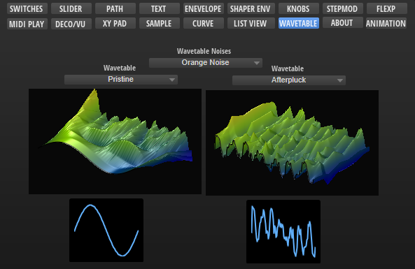

/ HALion Developer Resource / HALion Macro Page / Templates /
Wavetable Noise Selector
On this page:

Description
The Wavetable Noise Selector is a preconfigured template that can be used to select sample files for the noise of a Wavetable Zone. The template can be configured with the available Template Parameters. The Scope parameter determines for which Wavetable Zone the noise selector applies. The Product parameter defines the source folders of the sample files to be displayed in the noise selector. The look of the controls can be adapted freely by changing the components inside the template.
To explore the functionality and connections:
- Load the Init Basic Controls.vstpreset from the Basic Controls library.
- Open the Macro Page Designer, go to the GUI Tree and navigate to "Pages > Wavetable Page".
- Select "WT Noise Selector" and click Edit Element
 to examine the template.
to examine the template.
Template Properties
| Poperty | Description |
|---|---|
| Name | The name of the element. This name will be displayed in the GUI Tree. |
| Position/Size | Position X, Position Y, Width, Height: Position and size of the element in pixels. Position X/Y defines the position of the upper left corner. |
| Attach | Defines how an element behaves when its parent element is resized. You can set the following parameters:
|
| Tooltip | Text that appears as a tooltip when the mouse hovers over the element. |
| Template | Determines the template to be referenced. |
Template Parameters
| Parameters | Description |
|---|---|
| Scope | Determines for which Wavetable Zone the noise selector applies. For example, by setting Scope to @0:Zone 1 the noise selector applies to the first zone with the name Zone 1 that is found in the Program Tree. |
| Product | The Product parameter defines the source folders of the sample files to be displayed in the noise selector. Set this to HALion if you want to load sample files from the default file paths, which includes factory and user sample files. If you wish to deliver your own sample files as part of your library, you can set Product to the name of your instrument, e.g., MyProductName. Thereby, only the sample files for MyProductName will be shown in the noise selector. If Product is set to MyProductName: Then, the sample files must be added to the folder ./MyProductName/Sub Presets/Wavetable/Noises inside the VST Sound, otherwise the noise selector will not see these sample files. You can also include both, the HALion root folder and the root folder of your instrument, by setting Product to MyProductName|HALion. The noise selector will then show the content of both locations. |
| Label | A Label control for displaying a label above the menu. |
❕ If you need further control over the content locations, you can specify the required subfolder together with the Product:
MyProductName/MyNoises|HALion/MyNoises. See configuration 4 in the following table.
Content Locations for Different Configurations
| # | Product/Content | Default File Paths |
|---|---|---|
| 1 | Product = Only sample files from HALion, including any sample files the user has saved on hard disk. | Hard Disk: ./Documents/Steinberg/HALion/Sub Presets/Wavetable/Noises |
| 2 | Product = Only sample files from the specified library, including any sample files the user has saved on hard disk. | VST Sound: ./MyProductName/Sub Presets/Wavetable/Noises Hard Disk: ./Documents/Steinberg/MyProductName/Sub Presets/Wavetable/Noises |
| 3 | Product = All sample files from HALion, the specified library and any sample files the user has saved on hard disk. | VST Sound: ./MyProductName/Sub Presets/Wavetable/Noises Hard Disk: ./Documents/Steinberg/HALion/Sub Presets/Wavetable/Noises ./Documents/Steinberg/MyProductName/Sub Presets/Wavetable/Noises |
| 4 | Product = All sample files from HALion, the specified library and any sample files the user has saved on hard disk. | VST Sound: ./MyProductName/Sub Presets/Wavetable/Noises/MyNoises Hard Disk: ./Documents/Steinberg/HALion/Sub Presets/Wavetable/Noises/MyNoises ./Documents/Steinberg/MyProductName/Sub Presets/Wavetable/Noises/MyNoises |
❕ The location of the sample files inside the VST Sound must match the path defined by Product, otherwise the noise selector will not see these sample files. If libraries deliver sample files in multiple VST Sounds, all sample files with the same path will be shown together in the noise selector.
Components inside the Template

Controls and Subtemplates
| Item | Description |
|---|---|
| group WT | A Group that contains all necessary elements for the noise selector. group noise: Another Group that contains:
|
| label | A Label control for displaying a label above the menu. Its Text property is exported and the default is set to Wavetable Noises. |